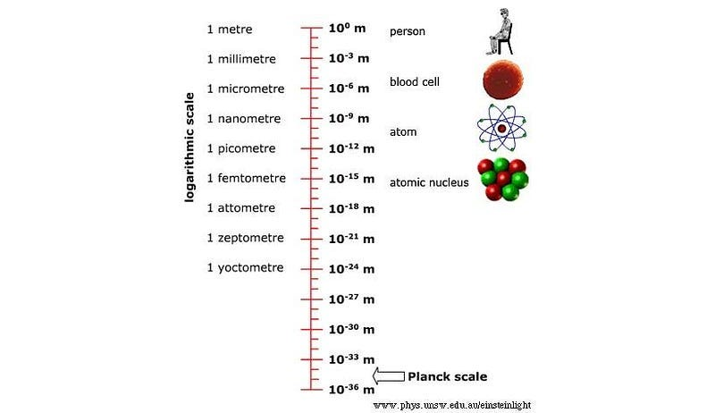
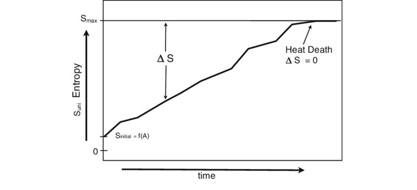
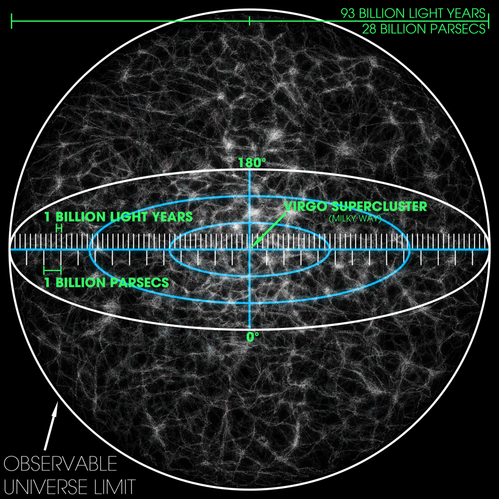
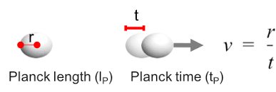

Theoretical Limit 1: Planck Length
The Planck length, approximately 1.616 × 10^-35 meters, represents the smallest meaningful scale for measuring distances in the universe according to modern theoretical physics. Below this limit, classical concepts of space and time break down, and quantum gravitational effects dominate. Space-time can be seen as granular, in "blocks" of minimal size, imposing fundamental limits on how energy, particles, and information can propagate.
This limit is crucial for the development of quantum gravity theories and attempts to unify general relativity with quantum mechanics. Although not yet experimentally measurable, it provides essential theoretical constraints on the structure of the universe at extremely small scales, influencing our understanding of primordial black holes and the early universe immediately after the Big Bang.
Theoretical Limit 2: Entropy and Information
The second law of thermodynamics states that the total entropy of an isolated system never decreases, defining a limit to the organization of energy and matter in the universe. This principle determines the natural direction of physical processes and influences phenomena from microscopic to cosmological scales, such as the evolution of stars, black holes, and galactic mergers.
In astrophysics, entropy is directly related to the information contained in gravitational systems, as illustrated by the Bekenstein bound, which connects the maximum amount of information to the area of a black hole's event horizon. Therefore, entropy and information represent fundamental limits on the organization of the universe and the transmission of data at extreme scales.
Theoretical Limit 3: Maximum Energy Density
The maximum energy density, or Planck density, defines a theoretical limit on how compact energy can become before quantum gravity dominates space-time. Beyond this limit, classical physics models fail, and extreme quantum phenomena, such as the formation of primordial black holes, become inevitable.
Understanding this maximum density is essential for investigating the origin of the universe, Big Bang physics, and the initial conditions that led to cosmic expansion. This limit connects quantum mechanics to general relativity, revealing constraints on the stability of matter and energy under extreme conditions.
Theoretical Limit 4: Planck Time
Planck time, approximately 5.39 × 10^-44 seconds, defines the smallest meaningful temporal unit according to theoretical physics. At intervals shorter than this, known laws of causality and motion no longer apply, and quantum gravity effects dominate.
This limit is crucial for understanding the early evolution of the universe, allowing us to define the "first instant" after the Big Bang in which space-time concepts are still valid. It sets fundamental restrictions on how physical processes can occur at extremely short scales and provides essential parameters for unified physical theories.
